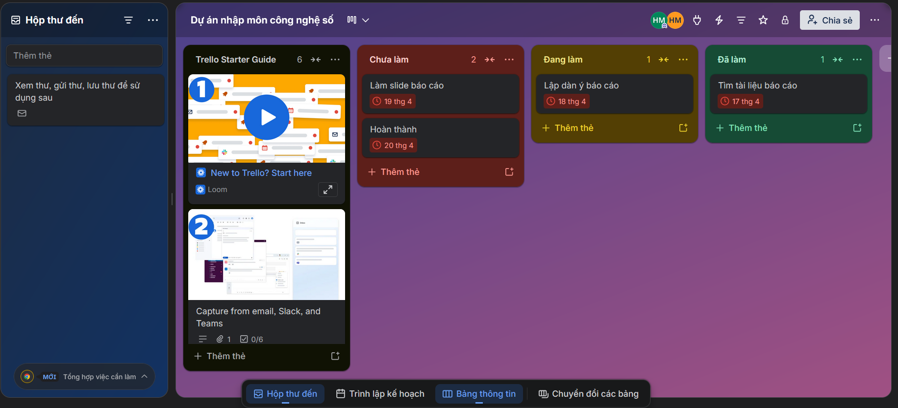
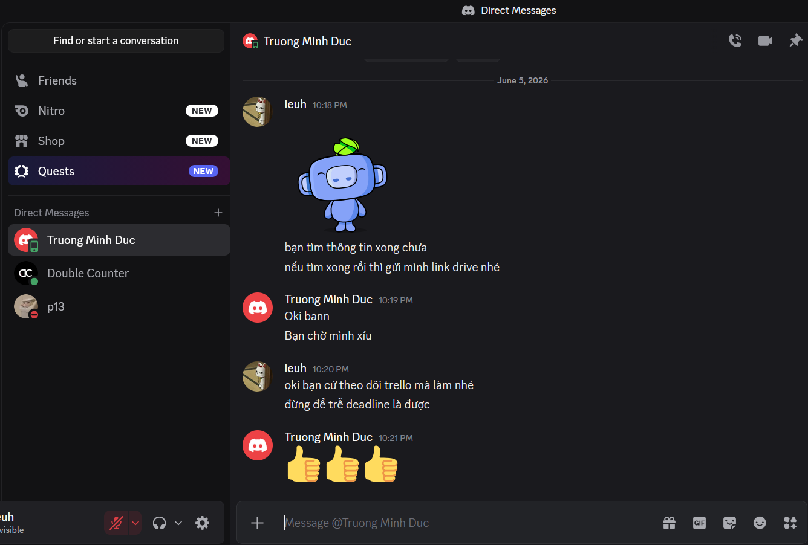
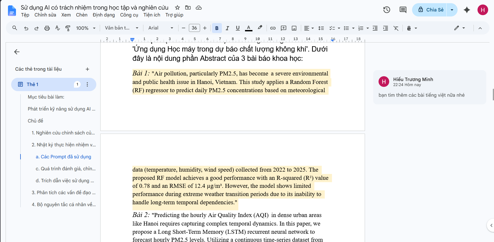
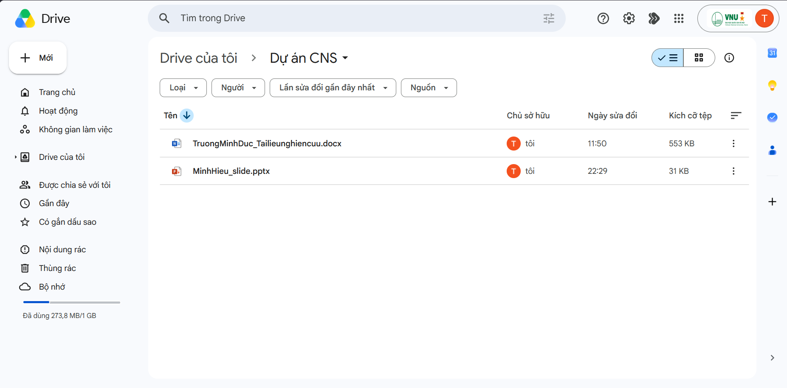

Hợp tác trực tuyến cho dự án nhóm
Mục tiêu bài làm: Thành thạo các công cụ hợp tác trực tuyến và thể hiện năng lực quản lý, điều phối cá nhân trong dự án nhóm.
Báo cáo cá nhân
Tên dự án: Dự án nhập môn công nghệ số và AI.
Thời gian thực hiện: 1 tuần.
Thiết lập và kết nối các công cụ
Để chuẩn bị cho dự án, em đã chủ động tham gia thiết lập bộ 4 công cụ phù hợp nhất:
-
Trello
Dùng để quản lý các đầu việc (Tasks).
-
Google Drive
Để lưu trữ dữ liệu tập trung.
-
Google Docs
Để cả nhóm cùng soạn thảo nội dung báo cáo trực tiếp.
-
Discord
Kênh liên lạc chính của nhóm.
Quản lý tác vụ (Trello)
Quản lý danh sách nhiệm vụ
Em đã tạo các thẻ công việc cụ thể như: "Tìm tài liệu tham khảo", "Thiết kế slide", "Lập dàn ý báo cáo". Các thẻ này đều được gắn:
- Mô tả chi tiết: Ghi rõ cần làm những gì.
- Deadline: Thời hạn hoàn thành rõ ràng.
Cập nhật tiến độ thường xuyên
Trong suốt 1 tuần thực hiện, em đã cập nhật trạng thái thẻ ít nhất 3 lần vào các ngày Thứ Hai (bắt đầu làm), Thứ Tư (đang thực hiện và cập nhật tiến độ) và Thứ Sáu (hoàn thành).

Tương tác và hỗ trợ đồng đội
Chủ động thảo luận trên Discord
Em đã thực hiện việc tương tác với thành viên trong nhóm về dự án. Nội dung bao gồm việc nhắc nhở các bạn về deadline, đặt câu hỏi về các phần nội dung chưa rõ, báo cáo tiến độ làm việc cho các bạn.

Cộng tác nội dung trên Google Docs
Em thường xuyên vào tệp Docs để xem các bạn viết gì. Em không chỉ viết phần của mình mà còn sử dụng tính năng "Nhận xét" (Comment) để góp ý cho các bạn khác, giúp nội dung bài tập được hoàn thiện hơn.

Quản lý tài nguyên (Google Drive)
Hệ thống thư mục logic
Em đã tạo thư mục dự án với cấu trúc 2 cấp: Thư mục gốc là "Dự án nhập môn công nghệ số và AI", bên trong có các thư mục con như: 01_Tai_lieu_nghien_cuu, 02_Ban_thao_Noi_dung, 03_Hinh_anh_minh_chung.
Quy chuẩn đặt tên và phân quyền
100% tệp tin do em tạo ra đều tuân thủ quy tắc: [Nguoi_lam]_[Ten_File]. Em cũng thiết lập quyền truy cập cho các thành viên phụ để họ có thể xem hoặc sửa tùy vào vai trò của họ.

Phân tích thách thức và giải pháp
Thách thức về quản lý thời gian
Vấn đề: Do lịch học dày, em đôi khi quên cập nhật Trello.
Giải pháp: Em đã cài đặt thông báo Trello về điện thoại và đặt nhắc nhở trên lịch vào mỗi sáng để kiểm tra các đầu việc. Kết quả là em hoàn thành 100% nhiệm vụ đúng hạn.
Thách thức khi cùng soạn thảo văn bản
Vấn đề: Khi 3 người cùng sửa một file Google Docs, đôi khi nội dung bị chồng chéo hoặc bị xóa nhầm.
Giải pháp: Em đã đề xuất cả nhóm chuyển sang chế độ "Đề xuất" (Suggesting) khi sửa bài của người khác. Điều này giúp kiểm soát được ai đã sửa gì trước khi chấp nhận thay đổi vào bản chính.
Thách thức về giao tiếp
Vấn đề: Discord đôi khi có quá nhiều tin nhắn khiến em bị trôi thông tin quan trọng từ giảng viên.
Giải pháp: Em đã tạo một kênh riêng đặt tên là #Thong-bao-quan-trong và chỉ dùng để ghim các yêu cầu từ Thầy/Cô. Nhờ vậy, nhóm em luôn bám sát đúng yêu cầu đề bài.
Minh chứng hợp tác hiệu quả
Bài học nhấn mạnh tầm quan trọng của công cụ, quy trình rõ ràng và giao tiếp hiệu quả trong hợp tác nhóm.